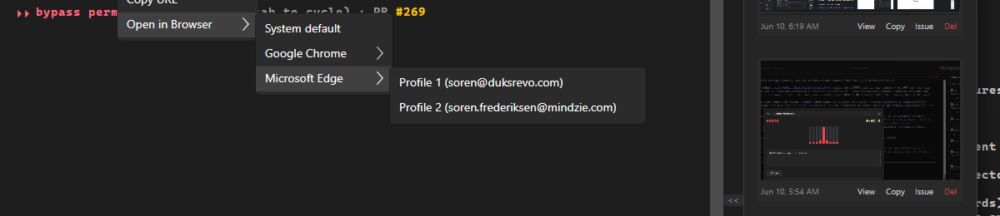

The tunnel-phase PointerPressed handler on the parent "Open in Browser" item also fired for presses on its descendant submenu leaves (a tunnel route passes through ancestors), so every leaf click ran the parent's default action and a profile could never be selected.
The handler now launches the default ONLY when the press lands on the parent's own header. The submenu flies out to a popup outside the header rectangle, so a press whose position (relative to the parent) is within the header bounds is a header click; anything outside falls through to the leaf's own Click.
parent.AddHandler(PointerPressedEvent, (_, e) =>
{
var pos = e.GetPosition(parent);
bool onHeader = pos.X >= 0 && pos.Y >= 0
&& pos.X <= parent.Bounds.Width && pos.Y <= parent.Bounds.Height;
if (!onHeader)
return; // leaf press - let the leaf handle it
e.Handled = true;
_linkContextMenu?.Close();
OpenInBrowserDefault(target);
}, RoutingStrategies.Tunnel);
| Action | Expected handler | Actual (log) | Result |
|---|---|---|---|
| Click Edge -> "Profile 2 (mindzie)" leaf | OpenInBrowserProfile (folder Profile 1) + save default |
OpenWithProfile: profile=Profile 1 ... started pid=60324; BrowserDefaultStore.Save; OpenInBrowserProfile: ... Microsoft Edge/Profile 1 |
PASS |
| Plain-click the parent "Open in Browser" header | OpenInBrowserDefault reopens remembered default |
OpenInBrowserDefault: opened ... in Microsoft Edge/Profile 1 |
PASS |
| Click "System default" leaf | OpenInBrowserSystemDefault |
OpenInBrowserSystemDefault: https://dev.azure.com/mindzie/FixTest |
PASS |
The same Profile-2-leaf click that produced OpenInBrowserDefault + no saved default BEFORE the fix now produces OpenInBrowserProfile + a saved config.json browser.default (folder Profile 1) AFTER the fix - a clean before/after at the identical coordinate.
config.json after selecting "Profile 2 (mindzie)":
browser.default: exe=C:\Program Files (x86)\Microsoft\Edge\Application\msedge.exe folder=Profile 1

dotnet build src/CcDirector.Terminal.Avalonia Build succeeded. 0 Warning(s) 0 Error(s)